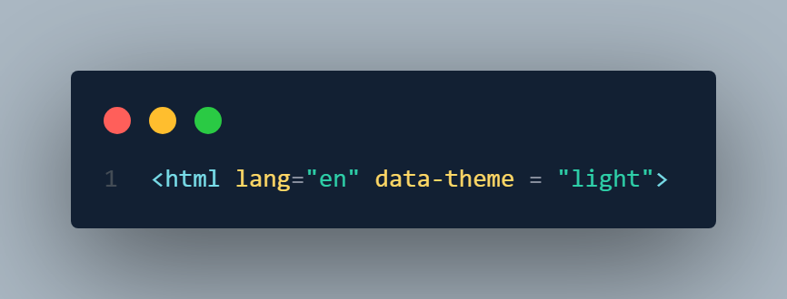

Go to DaisyUI webpage. And go to cdn. From there copy the code and paste it in your html header.
There also code for theme which you can copy and paste it to use their custom theme. But we have to write the theme name inside the html opening tag like this---

We need to create a tailwind.config.js file to make the intellisense work.
Copy the theme controller code to switch to dark mode and vise-versa.
✨btn is a default button of DaisyUI. We also have btn-primary, btn-secondary, btn-soft etc
✨We can copy paste cards, navbar, footer and other things from DaisyUI.